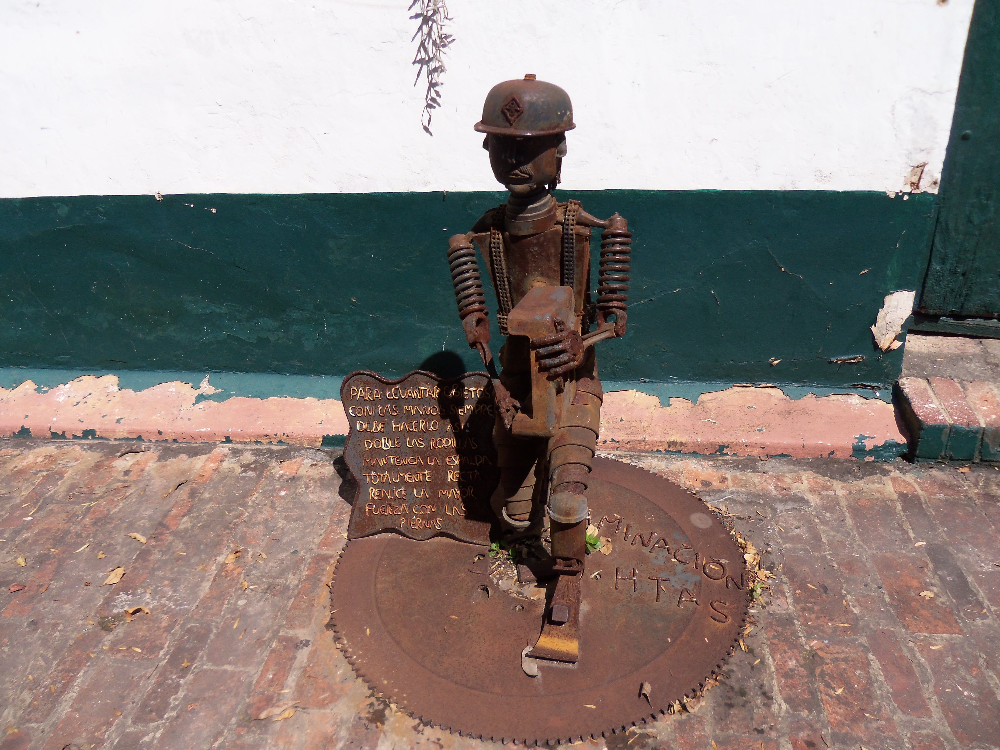

CURSO DE HTML Y CSS
>Formulario:
Elija un parrafo:
parrafo 1 parrafo 2Parrafo 1
Los lenguajes de programacion nos permiten crear aplicaciones web, aplicaciones moviles y mucho mas. Para la creacion de
nuestras aplicaciones contamos con multiples entornos de desarrollo, librerias y muchas herramientas. Aunque hoy en dia es facil
acceder a estos recursos, podemos resaltar la complejidad de algunos lenguales de programacion, lo cual se puede solucionar
con dedicacion y disciplina.
Parrafo 2
Existen muchos lenguajes de programacion y podemos elegir el que mas nos guste de acuerdo al area de desarrollo en el cual
nos gustaria trabajar.Dentro de nuestros lenguajes mas populares tenemos Java, Python, c++ y JavaScrip
Programador fullstack:
Lista no ordenada de mis lenguajes favoritos:
- python
- java
- c++
Lista ordenada de lenguajes mas buscados:
- ruby
- kotling
- haskell